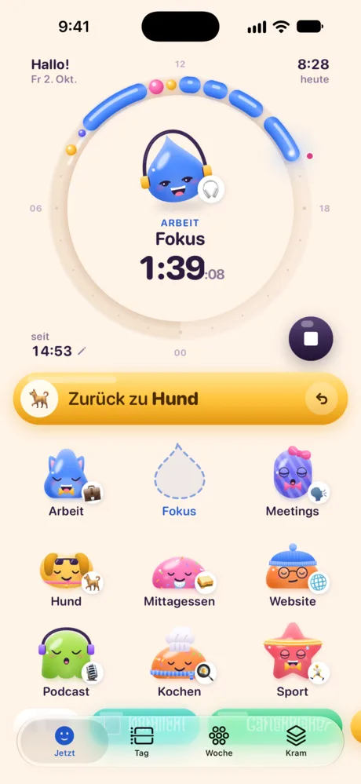
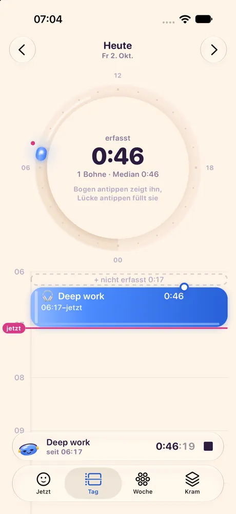
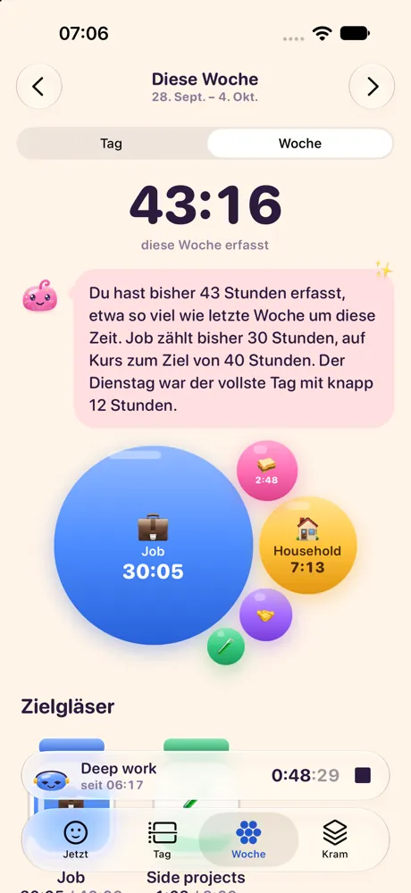
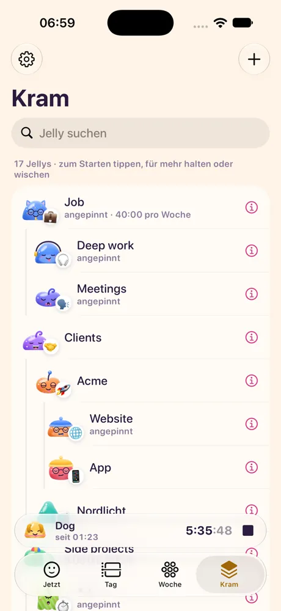

Tipp ein Jelly an. Und hopp!
Hopwatch ist ein Zeittracker, in dem alles, wohin deine Zeit geht, ein Jelly mit Gesicht ist: der Job, ein Kunde, der Hund. Tipp eins an, und es hüpft ins Rad von heute und fängt an zu zählen. Tipp ein anderes an, und du hast gewechselt. Das ist eigentlich schon alles.
Na los, tipp eins an.
Jetzt, Tag, Woche, Kram
Vier Tabs. An den meisten Tagen brauchst du nur den ersten.
-

JetztDas laufende Jelly sitzt im Rad. Tipp ein anderes an, um zu wechseln, oder spring zurück zum vorigen. 
TagJeder Eintrag ist eine Bohne. Zieh an einem Ende, um eine Zeit zu korrigieren, oder tipp auf eine Lücke, um sie zu füllen. 
WocheSummen als Blasen, Ziele als Gläser, die sich füllen. 
KramAlle deine Jellys. Gruppier sie, pinn die wichtigsten an und archivier den Rest.
Was es noch kann
Zu jeder Funktion gibt es ein Jelly. Tipp sie ruhig an.
-
Ein Tipp zum Wechseln
Was du startest, stoppt das Vorige. Du musst also auf keinen Timer aufpassen. Das falsche erwischt? Rückgängig. Vergessen zu stoppen? Hopwatch erinnert dich, und du stoppst einfach zu der Zeit, als du wirklich aufgehört hast.
-
Dein Tag als Rad
Heute ist ein 24-Stunden-Rad aus Fruchtgummi, mittags oben, Mitternacht unten. Im Tab Tag liegen deine Einträge als Bohnen, die du ziehen und auffüllen kannst.
-
Wochen und Ziele
Der Tab Woche zählt alles zusammen. Gib einem Jelly ein Wochenziel, etwa 40 Stunden Arbeit oder 3 Stunden Gitarre, und sieh zu, wie sich sein Glas füllt.
-
Jedes Jelly ist wer
Jellys bekommen ihren Look von Name und Emoji. Der Hund kriegt Schlappohren, Kochen eine Kochmütze, Fokus Kopfhörer. Du kannst alles ändern oder auf „Überrasch mich“ tippen.
-
Auf dem Sperrbildschirm
Am iPhone sitzt das laufende Jelly samt Timer auf dem Sperrbildschirm und in der Dynamic Island, mit Knöpfen für Stopp und Zurück.
-
Bleibt auf deinem Handy
Kein Konto, kein Server, keine Werbung, kein Tracking. Deine Zeit liegt auf deinem Handy und nirgends sonst, und du kannst sie jederzeit als Datei exportieren. Datenschutz
-
Apple Intelligence, wenn du sie hast
Auf iPhones mit Apple Intelligence schlägt Hopwatch Emojis, Farben und Looks vor, schreibt eine kleine Zusammenfassung deiner Woche und versteht Einträge wie „2 Stunden Deep Work heute Morgen“. Das alles läuft auf dem iPhone. Ohne sie funktioniert alles andere genauso.
-
Deutsch und Englisch
Hopwatch spricht beides und richtet sich nach der Sprache deines Handys.